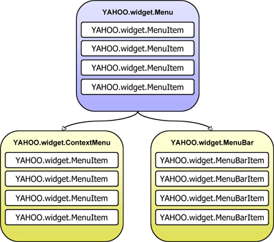
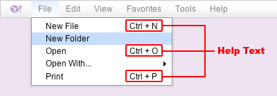
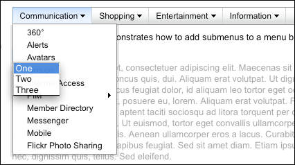

YUI 2: Menu
YUI 2: Menu
 The Menu family of components features a collection of controls that make it easy to add menus to a website or web application. With the Menu Controls you can create website fly-out menus, customized context menus, or application-style menu bars with just a small amount of scripting.
The Menu family of components features a collection of controls that make it easy to add menus to a website or web application. With the Menu Controls you can create website fly-out menus, customized context menus, or application-style menu bars with just a small amount of scripting.
The Menu family of controls features:
- Keyboard and mouse navigation.
- A rich event model that provides access to all of a Menu instance's interesting moments.
- Support for Progressive Enhancement; Menus can be created from simple, semantic markup on the page or purely through JavaScript.
On This Page:
Quick Links:
- Examples: Explore examples of the Menu Control in action.
- API Documentation: View the full API documentation for the Menu Control.
- Release Notes: Detailed change log for the Menu Control.
- License: The YUI Library is issued under a BSD license.
- Download: Download the Menu Control as part of the full YUI Library at YUILibrary.com.
The Menu Family
Menu
Subclass of YAHOO.widget.Overlay. Menu is the base class for all menu containers. The Menu class creates a container that holds a vertical list representing a set of options or commands.
ContextMenu
Subclass of Menu. Creates a list of options or commands that are made visible in response to an HTML element's "contextmenu" event ("mousedown" for Opera).
MenuBar
Subclass of Menu. Horizontal collection of items, each of which can contain a submenu.
Menu Object Model
The following diagrams illustrate the object model for the widgets that compose the Menu family of controls:
Menu Types
There are three Menu types: YAHOO.widget.Menu, YAHOO.widget.ContextMenu, and YAHOO.widget.MenuBar.

Menu Item Types
Each Menu type has a corresponding type for its items.
Submenu Types
Menu instances can be nested inside MenuItem instances to create a menu hierarchy. Each menu item type has a corresponding submenu type.

Getting Started
To use the Menu library, include the following source files in the web page:
<!-- Fonts CSS - Recommended but not required --> <link rel="stylesheet" type="text/css" href="http://yui.yahooapis.com/2.9.0/build/fonts/fonts-min.css"> <!-- Core + Skin CSS --> <link rel="stylesheet" type="text/css" href="http://yui.yahooapis.com/2.9.0/build/menu/assets/skins/sam/menu.css"> <!-- Dependencies --> <script src="http://yui.yahooapis.com/2.9.0/build/yahoo-dom-event/yahoo-dom-event.js"></script> <script src="http://yui.yahooapis.com/2.9.0/build/container/container_core-min.js"></script> <!-- Source File --> <script src="http://yui.yahooapis.com/2.9.0/build/menu/menu-min.js"></script>
yui-skin-sam class name to an element that is a parent of the element
in which the Menu Control lives. You can usually accomplish this simply by putting the class on the
<body> tag:
<body class="yui-skin-sam">
For more information on skinning YUI components and making use of default skins, see our Understanding YUI Skins article here on the website.

YUI Dependency Configurator:
Instead of copying and pasting the filepaths above, try letting the YUI dependency Configurator determine the optimal file list for your desired components; the Configurator uses YUI Loader to write out the full HTML for including the precise files you need for your implementation.
Note: If you wish to include this component via the YUI Loader, its module name is menu. (Click here for the full list of module names for YUI Loader.)
Where these files come from: The files included using the text above will be served from Yahoo! servers; see "Serving YUI Files from Yahoo!" for important information about this service. JavaScript files are minified, meaning that comments and white space have been removed to make them more efficient to download. To use the full, commented versions or the -debug versions of YUI JavaScript files, please download the library distribution and host the files on your own server.
Order matters: As is the case generally with JavaScript and CSS, order matters; these files should be included in the order specified above. If you include files in the wrong order, errors may result.
Basic Setup
A Menu instance can be created with or without existing HTML.
The markup for a Menu control follows that of
YAHOO.widget.Module, with its body element
(<div class="bd">) containing a list element
(<ul>).
Each item in a Menu is represented by a list item element
(<li class="yuimenuitem">), each of which has a
label (<a class="yuimenuitemlabel">) that can
contain plain text or HTML.
<div id="basicmenu" class="yuimenu"> <div class="bd"> <ul class="first-of-type"> <li class="yuimenuitem"> <a class="yuimenuitemlabel" href="http://mail.yahoo.com"> Yahoo! Mail </a> </li> <li class="yuimenuitem"> <a class="yuimenuitemlabel" href="http://addressbook.yahoo.com"> Yahoo! Address Book </a> </li> <li class="yuimenuitem"> <a class="yuimenuitemlabel" href="http://calendar.yahoo.com"> Yahoo! Calendar </a> </li> <li class="yuimenuitem"> <a class="yuimenuitemlabel" href="http://notepad.yahoo.com"> Yahoo! Notepad </a> </li> </ul> </div> </div>
To instantiate a Menu based on existing HTML, pass the id of its corresponding
HTML element (in this case "basicmenu") to the Menu constructor
(YAHOO.widget.Menu) then call the render method with
no arguments.
YAHOO.util.Event.onContentReady("basicmenu", function () { // Instantiate a Menu. The first argument passed to the // constructor is the id of the element in the DOM that represents // the Menu instance. var oMenu = new YAHOO.widget.Menu("basicmenu"); // Call the "render" method with no arguments since the markup for // this Menu instance already exists in the DOM. oMenu.render(); // Show the Menu instance oMenu.show(); });
To create a Menu with no pre-existing markup on the page, call the Menu
constructor (YAHOO.widget.Menu) passing the id of the Menu
element to be created as the first argument.
Add items to a Menu instance via the addItem,
insertItem, or addItems methods.
Finally, it is necessary to call the render method passing
the id of, or reference to the element the Menu should be appended to.
YAHOO.util.Event.onDOMReady(function () { // Instantiate a Menu: The first argument passed to the constructor // is the id for the Menu element to be created, the second is an // object literal of configuration properties. var oMenu = new YAHOO.widget.Menu("basicmenu"); // Add items to the Menu instance by passing an array of object literals // (each of which represents a set of YAHOO.widget.MenuItem // configuration properties) to the "addItems" method. oMenu.addItems([ { text: "Yahoo! Mail", url: "http://mail.yahoo.com" }, { text: "Yahoo! Address Book", url: "http://addressbook.yahoo.com" }, { text: "Yahoo! Calendar", url: "http://calendar.yahoo.com" }, { text: "Yahoo! Notepad", url: "http://notepad.yahoo.com" } ]); // Since this Menu instance is built completely from script, call the // "render" method passing in the DOM element that it should be // appended to. oMenu.render(document.body); // Show the Menu instance oMenu.show(); });
An alternative way of adding items when building a Menu from script is to leverage the "itemdata" property. Start by defining a set of MenuItems using an array of object literals — each of which represents a set of YAHOO.widget.MenuItem configuration properties. Set the Menu's "itemdata" property to the array of MenuItem configuration properties via an object literal that is passed as the second argument to the Menu's constructor. For example:
YAHOO.util.Event.onDOMReady(function () { // Define an array of object literals (each of which represents a set of // YAHOO.widget.MenuItem configuration properties) to be passed to the // "itemdata" property. var aMenuItems = [ { text: "Yahoo! Mail", url: "http://mail.yahoo.com" }, { text: "Yahoo! Address Book", url: "http://addressbook.yahoo.com" }, { text: "Yahoo! Calendar", url: "http://calendar.yahoo.com" }, { text: "Yahoo! Notepad", url: "http://notepad.yahoo.com" } ]; // Instantiate a Menu. The first argument passed to the // constructor is the id of the DOM element to be created for the // Menu instance. var oMenu = new YAHOO.widget.Menu("basicmenu", { itemdata: aMenuItems }); // Since this Menu instance is built completely from script, call the // "render" method passing in the DOM element that it should be // appended to. oMenu.render(document.body); // Show the Menu instance oMenu.show(); });
Creating Submenus From Existing Markup
It is easy to create a Menu hierarchy using existing markup. In addition to a label, each MenuItem
instance can also contain a submenu. To add a submenu via markup, simply nest the Menu markup
inside the (<li class="yuimenuitem">) element representing a MenuItem instance.
<div id="productsandservices" class="yuimenu"> <div class="bd"> <ul class="first-of-type"> <li class="yuimenuitem"> <a class="yuimenuitemlabel" href="#communication"> Communication </a> <!-- A submenu --> <div id="communication" class="yuimenu"> <div class="bd"> <ul> <!-- Items for the submenu go here --> </ul> </div> </div> </li> <li class="yuimenuitem"> <a class="yuimenuitemlabel" href="http://shopping.yahoo.com"> Shopping </a> <!-- A submenu --> <div id="shopping" class="yuimenu"> <div class="bd"> <ul> <!-- Items for the submenu go here --> </ul> </div> </div> </li> <li class="yuimenuitem"> <a class="yuimenuitemlabel" href="http://entertainment.yahoo.com"> Entertainment </a> <!-- A submenu --> <div id="entertainment" class="yuimenu"> <div class="bd"> <ul> <!-- Items for the submenu go here --> </ul> </div> </div> </li> <li class="yuimenuitem"> <a class="yuimenuitemlabel" href="#information"> Information </a> <!-- A submenu --> <div id="information" class="yuimenu"> <div class="bd"> <ul> <!-- Items for the submenu go here --> </ul> </div> </div> </li> </ul> </div> </div>
To instantiate a Menu hierarchy based on existing HTML, pass the id of its corresponding root
HTML element (in this case "productsandservices") to the Menu constructor
(YAHOO.widget.Menu) then call the render method with no arguments.
There is no need to instantiate and render submenus; as a convenience all submenus are automatically
instantiated and rendered with the root Menu.
YAHOO.util.Event.onContentReady("productsandservices", function () { // Instantiate a Menu. The first argument passed to the // constructor is the id of the element in the DOM that represents // the root Menu instance. var oMenu = new YAHOO.widget.Menu("productsandservices"); // Call the "render" method with no arguments since the markup for // this Menu instance already exists in the DOM. oMenu.render(); // Show the Menu instance oMenu.show(); });
Creating Submenus Using Script
It is also easy to create a Menu hierarchy using script alone. Begin by defining an array
of MenuItem configuration properties. Add a submenu to a MenuItem by setting the MenuItem
instance's "submenu" configuration property to an object literal that
specifies values for both the "id" and "itemdata" properties. The "id" property specifies the id
of the Menu to be created, while the "itemdata" property accepts an array of MenuItem configuration
properties, each of which is used to configure the individual items in the Menu. Once defined,
pass the array of MenuItem configuration properties to the addItems method of Menu.
Just as with creating a Menu hierarchy via existing HTML, it is only necessary to instantiate and render the root Menu as each submenu is automatically instantiated and rendered with the root Menu as a convenience.
YAHOO.util.Event.onDOMReady(function () { var aItems = [ { text: "Menu Item One", submenu: { id: "submenu1", // Id for the submenu element to be created // Array of YAHOO.widget.MenuItem configuration properties itemdata: ["Menu Item One", "Menu Item Two", "Menu Item Three"] } }, { text: "Menu Item Two", submenu: { id: "submenu2", // Id for the submenu element to be created // Array of YAHOO.widget.MenuItem configuration properties itemdata: ["Menu Item One", "Menu Item Two", "Menu Item Three"] } }, { text: "Menu Item Three", submenu: { id: "submenu3", // Id for the submenu element to be created // Array of YAHOO.widget.MenuItem configuration properties itemdata: ["Menu Item One", "Menu Item Two", "Menu Item Three"] } }, { text: "Menu Item Four", submenu: { id: "submenu4", // Id for the submenu element to be created // Array of YAHOO.widget.MenuItem configuration properties itemdata: ["Menu Item One", "Menu Item Two", "Menu Item Three"] } } ]; // Instantiate a Menu. The first argument passed to the // constructor is the id of the DOM element to be created for the // Menu instance. var oMenu = new YAHOO.widget.Menu("mymenu"); // Add items to the Menu instance by passing an array of object literals // (each of which represents a set of YAHOO.widget.MenuItem // configuration properties) to the "addItems" method. oMenu.addItems(aItems); // Since this Menu instance is built completely from script, call the // "render" method passing in the DOM element that it should be // appended to. oMenu.render(document.body); // Show the Menu instance oMenu.show(); });
Using Menu
Updating Menu Content
Once a Menu has been created, the Menu API provides several ways of updating a
Menu's content on the fly. All of the methods used to initially add MenuItems
to the Menu (addItem, insertItem, or
addItems) can be called on a Menu instance to instantly update its
content.
Individual MenuItems can be removed from a Menu using the
removeItem method, or the clearContent method can be
used to remove all MenuItems from a Menu. Using the clearContent
method removes all content from a Menu instance, effectively restoring it to its
pre-rendered state. For this reason, it is necessary to call the
render method after using clearContent so that the
Menu's content is rendered into the Menu's body element
(<div class="bd">). However, pass no arguments when
calling the render method after calling clearContent,
since the Menu's root element is already in the page. The follow example
illustrates how to use the clearContent method to update the
content of a Menu instance.
YAHOO.util.Event.onDOMReady(function () { // Instantiate a Menu. The first argument passed to the // constructor is the id of the DOM element to be created for the // Menu instance. var oMenu = new YAHOO.widget.Menu("basicmenu"); // Add some MenuItems to the Menu oMenu.addItems([ "MenuItem One", "MenuItem Two", "MenuItem Three", "MenuItem Four" ]); // Since this Menu instance is built completely from script, call the // "render" method passing in the DOM element that it should be // appended to. oMenu.render(document.body); // Remove all of the MenuItems from the Menu oMenu.clearContent(); // Add an entirely new set of MenuItems to the Menu oMenu.addItems([ "MenuItem Five", "MenuItem Six", "MenuItem Seven", "MenuItem Eight" ]); // Call the "render" method again - this time without any arguments since // the Menu's root element is already in the page. oMenu.render(); // Show the Menu instance oMenu.show(); });
Using Configuration Properties
Configuration properties control the look and behavior of Menu and MenuItem instances and can be
set via an object literal that is passed as a second argument to the object's constructor.
An object literal of MenuItem configuration properties can also be passed to Menu's
(addItem and insertItem) methods, and an Array of such object literals can
be passed to Menu's addItems method. Together these methods provide a convenient way
to add pre-configured items to a Menu.
Once defined, Menu and MenuItem configuration properties are applied differently: MenuItem configuration properties are applied immediately, whereas the application of Menu configuration properties is deferred until the Menu is rendered.
The following example demonstrates the use of Menu and MenuItem configuration properties.
YAHOO.util.Event.onDOMReady(function () { // Create a Menu that is visible by default by setting the "visible" // configuration property to "true." var oMenu = new YAHOO.widget.Menu("mymenu", { visible: true }); // Add MenuItems to the Menu by passing an array of MenuItem configuration // properties to the Menu's "addItems" method. oMenu.addItems([ { text: "Menu Item One", disabled: true }, { text: "Menu Item Two", checked: true } ]); oMenu.render(document.body); });
Once instantiated, a Menu or MenuItem's configuration is managed by a
configuration object available
via the "cfg" property. Configuration properties are accessible at runtime
through the configuration object's
getProperty
and setProperty
methods. For example:
YAHOO.util.Event.onDOMReady(function () { // Create a Menu that is visible by default by setting the "visible" // configuration property to "true." var oMenu = new YAHOO.widget.Menu("mymenu", { visible: true }); // Add MenuItems to the Menu by passing an array of MenuItem configuration // properties to the Menu's "addItems" method. oMenu.addItems([ { text: "Menu Item One", disabled: true }, { text: "Menu Item Two", checked: true } ]); oMenu.render(document.body); // Alert the value of the first MenuItem's "text" configuration property alert(oMenu.getItem(0).cfg.getProperty("text")); // alerts "Menu Item One" // Enable the first MenuItem by setting the "disabled" configuration // property to "false" oMenu.getItem(0).cfg.setProperty("disabled", false); // Hide and show the Menu by toggling the value of the "visible" // configuration property alert(oMenu.cfg.getProperty("visible")); // alerts "true" oMenu.cfg.setProperty("visible", false); alert(oMenu.cfg.getProperty("visible")); // alerts "false" });
As a convenience, certain Menu configuration properties, when set, are automatically applied to all submenus. Those are:
- iframe
- constraintoviewport
- hidedelay
- showdelay
- submenuhidedelay
- clicktohide
- effect
- classname
- scrollincrement
- maxheight
- minscrollheight
- monitorresize
- shadow
- preventcontextoverlap
- keepopen
The complete list of Menu and MenuItem configuration properties are listed below in the Configuration Property Reference section. Additionally, two Menu examples specifically focus on MenuItem configuration properties:
Handling Events
This section describes how to handle events and contains the following sub sections:
- Adding Event Listeners
- Removing Event Listeners
- Listening For Events On Submenus
- Passing Arguments To Event Handlers
- Scope Of Event Handlers
- The "onclick" Configuration Property
Adding Event Listeners
All of the events for Menu and MenuItem (including DOM-based events such as
"mouseover" or "click") are implemented as instances of
Custom Event
(YAHOO.util.CustomEvent). Please note: To listen
for DOM-based events always use the provided Custom Event-based interface
rather than attaching handlers directly to a Menu's DOM elements.
Add event listeners through the subscribe method. The following
example demonstrates how to subscribe to the "show" and "hide" events:
YAHOO.util.Event.onDOMReady(function () { // Create a new Menu instance var oMenu = new YAHOO.widget.Menu("mymenu"); oMenu.addItems(["Menu Item 1", "Menu Item 2", "Menu Item 3"]); // Define a handler for the "show" event function onShow(p_sType, p_aArgs) { alert(this.id + " is now visible"); } // Define a handler for the "hide" event function onHide(p_sType, p_aArgs) { alert(this.id + " is now hidden"); } // Subscribe to the "show" and "hide" events oMenu.subscribe("show", onShow); oMenu.subscribe("hide", onHide); oMenu.render(document.body); oMenu.show(); oMenu.hide(); });
By default, event handlers are called with two arguments: a string representing the name of the event and an array of arguments sent when the event fired. Events based on DOM events (e.g. "mouseover," "mouseout," "click," etc.) pass back the DOM event object to the listener as the first argument in the arguments array; if the target of the event was a MenuItem instance, it will be passed back as the second argument. For example:
YAHOO.util.Event.onDOMReady(function () { // Create a new Menu instance var oMenu = new YAHOO.widget.Menu("mymenu"); oMenu.addItems(["Menu Item 1", "Menu Item 2", "Menu Item 3"]); oMenu.render(document.body); oMenu.show(); // Define a handler for the "click" event function onClick(p_sType, p_aArgs) { var oEvent = p_aArgs[0], // DOM Event oMenuItem = p_aArgs[1]; // YAHOO.widget.MenuItem instance // Alert the type of the DOM event alert(oEvent.type); // If a MenuItem was clicked, alert the value of its text label if (oMenuItem) { alert(oMenuItem.cfg.getProperty("text")); } } // Subscribe to the "click" event oMenu.subscribe("click", onClick); });
Please note: the subscribe method is used in this
example because these are Custom
Event instances, not DOM events.
Removing Event Listeners
To remove an event listener, use the unsubscribe method:
oMenu.unsubscribe("click", onClick);
Listening For Events On Submenus
Adding event listeners to a Menu instance via the "subscribe" method will automatically subscribe the handler to the specified event type for all of its submenus. This is true for both DOM-based events, as well as Menu events.
Passing Arguments To Event Handlers
Arguments can be passed to event handlers via the third argument of the subscribe method.
YAHOO.util.Event.onDOMReady(function () { // Create a new Menu instance var oMenu = new YAHOO.widget.Menu("mymenu"); oMenu.addItems(["Menu Item 1", "Menu Item 2", "Menu Item 3"]); // Define a handler for the "beforeShow" event function onBeforeShow(p_sType, p_aArgs, p_aItemsArray) { // Add new items to the Menu instance this.addItems(p_aItemsArray); } var aMenuItems = ["Menu Item 4", "Menu Item 5", "Menu Item 6"]; // Subscribe to the "beforeShow" event, passing an array of strings // each representing the text label for new MenuItem instances to be added // to the Menu instance. oMenu.subscribe("beforeShow", onBeforeShow, aMenuItems); oMenu.render(document.body); oMenu.show(); });
Scope Of Event Handlers
The default scope of all event handlers is the Menu or MenuItem instance to which the event belongs. If a value of "true" is passed as the third argument to "subscribe," the scope of the listener will be changed to the value passed as the second argument. It is also possible to change the scope of an event handler by passing a scope object as the third argument to the "subscribe" method.
For more information on Custom Events, see the Custom Events section of the Event Utility landing page.
The "onclick" Configuration Property
The "onclick" configuration property provides an easy way define a "click" event listener for individual items when building menus from script. The "onclick" configuration property accepts an object literal representing the code to be executed when the MenuItem instance is clicked. The format for the object literal is:
{ fn: Function (Required), // The handler to call when the event fires. obj: Object (Optional), // An object to pass back to the handler. scope: Object (Optional) // The object to use for the scope of the handler. (By default the scope is the YAHOO.widget.MenuItem instance) }
The following example demonstrates how to use the "onclick" configuration property:
YAHOO.util.Event.onDOMReady(function () { // "click" event handler for each MenuItem instance function onMenuItemClick(p_sType, p_aArgs, p_oValue) { alert(("index: " + this.index + ", text: " + this.cfg.getProperty("text") + ", value: " + p_oValue), "info", "example9"); } // Instantiate a Menu. The first argument passed to the // constructor is the id of the DOM element to be created for the // Menu instance; the second is an object literal representing a set of // configuration properties. var oMenu = new YAHOO.widget.Menu("mymenu"); // Add items to the Menu instance by passing an array of object literals // (each of which represents a set of YAHOO.widget.MenuItem // configuration properties) to the "addItems" method. oMenu.addItems([ // Register a "click" event handler for the first item. { text: "Item One", onclick: { fn: onMenuItemClick } }, // Register a "click" event handler for the second item, // passing a string arguemnt ("foo") to the event handler. { text: "Item Two", onclick: { fn: onMenuItemClick, obj: "foo" } }, // Register a "click" event handler for the third item and // passing and array as an argument to the event handler. { text: "Item Three", onclick: { fn: onMenuItemClick, obj: ["foo", "bar"] } } ]); // Since this Menu instance is built completely from script, call the // "render" method passing in the DOM element that it should be // appended to. oMenu.render(document.body); oMenu.show(); });
The complete list of Menu and MenuItem events are listed in the Menu API documentation. For more information on working with Custom Events, see the Custom Event documentation.
Traversing a Hierarchical Menu
As indicated in the Menu Object Model diagram, every MenuItem instance is a child of a Menu instance. As a submenu, a Menu instance is a child of a MenuItem instance. Both the Menu and MenuItem APIs provide a set of properties and methods for navigating this Menu hierarchy.
Traversing Down a Hierarchical Menu
Every Menu instance maintains a collection of its child MenuItem instances. Individual MenuItems
can be retrieved from a Menu instance using the
getItem method. It is also
possible to retrieve an array of all of a Menu instance's MenuItems via the
getItems method.
A Menu's submenus are accessible to ways. Individual submenus can be retrieve via their
parent MenuItem's submenu
configuration property:
// Retrieve the submenu of the root Menu instance's first MenuItem var oSubmenu = oMenu.getItem(0).cfg.getProperty("submenu");
To retrieve an array of all submenus that are direct descendants of a Menu instance, use the
getSubmenus method.
Direct Access
The root DOM node of every Menu and MenuItem instance has a unique id. As a convenience the
MenuManager singleton class
provides two methods for retrieving a Menu or MenuItem instance by the id of its root node:
getMenu
and getMenuItem.
These two methods enable developers to avoid traversal of a Menu's hierarchy by providing
direct access to any Menu or MenuItem instance.
Traversing Up a Hierarchical Menu
Both the Menu and MenuItem classes implement a parent property that return a
reference to an instance's parent object. The parent of every MenuItem instance is a Menu, and
the parent of a Menu instance can be either a MenuItem (if the Menu is a submenu), or null (if the
Menu is the root of the Menu hierarchy). As a convenience, all submenus have a
getRoot method that returns a
reference to the top most Menu instance in the Menu hierarchy.
Using MenuBar
The MenuBar class (defined by YAHOO.widget.MenuBar) is a subclass
of Menu that creates a horizontal collection of items, each of which can have a
submenu. MenuBar instances are statically positioned (their
CSS
"position" property is set to "static") and visible by default.
Each item in a MenuBar instance is of type YAHOO.widget.MenuBarItem.
Creating A Menubar Using Existing HTML
Like Menu, MenuBar can be instantiated with or without existing markup on the
page. The markup for a MenuBar instance is similar to that of a Menu instance,
but the root element has a CSS class name of "yuimenubar" instead of "menu."
Each item in a MenuBar is represented by a list item element
(<li class="yuimenubaritem">), each of which has a
label (<a class="yuimenubaritemlabel">) that can
contain plain text or HTML.
<div id="mymenubar" class="yuimenubar"> <div class="bd"> <ul class="first-of-type"> <li class="yuimenubaritem first-of-type"> <a class="yuimenubaritemlabel" href="#file">File</a> <div id="file" class="yuimenu"> <div class="bd"> <ul> <li class="yuimenuitem"> <a class="yuimenuitemlabel" href="#">New File <em class="helptext">Ctrl + N</em></a> </li> <li class="yuimenuitem"> <a class="yuimenuitemlabel" href="#">New Folder</a> </li> <li class="yuimenuitem"> <a class="yuimenuitemlabel" href="#open">Open <em class="helptext">Ctrl + O</em></a> <div id="open" class="yuimenu"> <div class="bd"> <ul class="first-of-type"> <li class="yuimenuitem"> <a class="yuimenuitemlabel" href="#">Application 1</a> </li> <li class="yuimenuitem"> <a class="yuimenuitemlabel" href="#">Application 2</a> </li> <li class="yuimenuitem"> <a class="yuimenuitemlabel" href="#">Application 3</a> </li> <li class="yuimenuitem"> <a class="yuimenuitemlabel" href="#">Application 4</a> </li> </ul> </div> </div> </li> <li class="yuimenuitem"> <a class="yuimenuitemlabel" href="#">Print <em class="helptext">Ctrl + P</em></a> </li> </ul> </div> </div> </li> <li class="yuimenubaritem first-of-type"><a class="yuimenubaritemlabel" href="#"edit>Edit</a> <div id="pim" class="yuimenu"> <div class="bd"> <ul class="first-of-type"> <li class="yuimenuitem"> <a class="yuimenuitemlabel" href="#"> Undo<em class="helptext">Ctrl + Z</em></a> </li> <li class="yuimenuitem"> <a class="yuimenuitemlabel" href="#"> Redo<em class="helptext">Ctrl + Y</em></a> </li> </ul> <ul> <li class="yuimenuitem"> <a class="yuimenuitemlabel" href="#"> Cut<em class="helptext">Ctrl + X</em></a> </li> <li class="yuimenuitem"> <a class="yuimenuitemlabel" href="#"> Copy<em class="helptext">Ctrl + C</em></a> </li> <li class="yuimenuitem"> <a class="yuimenuitemlabel" href="#"> Paste<em class="helptext">Ctrl + V</em></a> </li> <li class="yuimenuitem"> <a class="yuimenuitemlabel" href="#"> Delete<em class="helptext">Del</em></a> </li> </ul> <ul> <li class="yuimenuitem"> <a class="yuimenuitemlabel" href="#"> Select All<em class="helptext">Ctrl + A</em></a> </li> </ul> <ul> <li class="yuimenuitem"> <a class="yuimenuitemlabel" href="#"> Find<em class="helptext">Ctrl + F</em></a> </li> <li class="yuimenuitem"> <a class="yuimenuitemlabel" href="#"> Find Again<em class="helptext">Ctrl + G</em></a> </li> </ul> </div> </div> </li> </ul> </div> </div>
To instantiate a Menubar based on existing HTML, pass the id of its corresponding
HTML element (in this case "mymenubar") to the Menu constructor
(YAHOO.widget.MenuBar) then call the render method with
no arguments.
YAHOO.util.Event.onDOMReady(function () { // Instantiate a MenuBar, passing in the id of the HTML element // representing the MenuBar. var oMenuBar = new YAHOO.widget.MenuBar("mymenubar"); // Render the MenuBar instance oMenuBar.render(); });
Creating A Menubar Using Script
To create a MenuBar with no pre-existing markup on the page, call the MenuBar constructor
(YAHOO.widget.MenuBar) passing the id of the MenuBar element to be created as the
first argument.
Add items to a MenuBar instance via the addItem, insertItem, or addItems methods.
Finally, it is necessary to call the render method passing the id of, or reference to the element the MenuBar should be appended to.
YAHOO.util.Event.onDOMReady(function () { var aItemData = [ { text: "File", submenu: { id: "filemenu", itemdata: [ { text: "New File", helptext: "Ctrl + N" }, "New Folder", { text: "Open", helptext: "Ctrl + O" }, { text: "Open With...", submenu: { id: "applications", itemdata: [ "Application 1", "Application 2", "Application 3", "Application 4" ] } }, { text: "Print", helptext: "Ctrl + P" } ] } }, { text: "Edit", submenu: { id: "editmenu", itemdata: [ [ { text: "Undo", helptext: "Ctrl + Z" }, { text: "Redo", helptext: "Ctrl + Y" } ], [ { text: "Cut", helptext: "Ctrl + X" }, { text: "Copy", helptext: "Ctrl + C" }, { text: "Paste", helptext: "Ctrl + V" }, { text: "Delete", helptext: "Del" } ], [ { text: "Select All", helptext: "Ctrl + A" } ], [ { text: "Find", helptext: "Ctrl + F" }, { text: "Find Again", helptext: "Ctrl + G" } ] ] } } ]; // Instantiate a MenuBar, passing in the id of the element to be created var oMenuBar = new YAHOO.widget.MenuBar("mymenubar"); // Add items to the MenuBar instance oMenuBar.addItems(aItemData); // Render the MenuBar instance oMenuBar.render(document.body); });
Configuring Style & Behavior
There are two possible styles and behaviors for a Menubar instance; one for emulating the behavior of menu bars found in traditional desktop applications, the other for creating drop down menu navigation commonly found on web sites. Toggling between these two popular behaviors is as simple as adding a CSS class and a configuration property.
Default Rendering For A MenuBar Instance Using The "Sam" Skin
By default MenuBar instances look and behave like those found in traditional desktop applications: each label in a MenuBar instance is lined up horizontally, and clicking on a label focuses the MenuBar instance and opens the corresponding submenu. While a MenuBar has focus, mousing over any label in the MenuBar automatically moves focus to it and opens its submenu. Below is a screen capture of the default rendering of the MenuBar with the "Sam" skin applied:
A MenuBar Rendered As Traditional Drop Down Website Navigation

Traditionally, menu bars used for website drop down menu navigation have tiny arrows to the right of each text label, providing a visual cue that the item contains a submenu. Additionally, hovering over any item in the menu bar automatically triggers the display of its submenu. To give this style and behavior to a MenuBar instance, apply the CSS class of "yuimenubarnav" to the root element. For example:
<div id="mymenubar" class="yuimenubar yuimenubarnav"> <!-- Additional Menubar markup here --> </div>
Secondly, set the "autosubmenudisplay" configuration property to "true" via an object literal passed to the MenuBar constructor:
var oMenuBar = new YAHOO.widget.MenuBar("mymenubar", { autosubmenudisplay: true });
When building a MenuBar instance entirely from script, apply the "yuimenubarnav" CSS class to its root element using the "addClass" method of the DOM utility:
var oMenuBar = new YAHOO.widget.MenuBar("mymenubar", { autosubmenudisplay: true }); YAHOO.util.Dom.addClass(oMenuBar.element, "yuimenubarnav");
Using ContextMenu
The ContextMenu class (defined by YAHOO.widget.ContextMenu)
provides an easy way to create context menus. The ContextMenu class adds a
"trigger" configuration
property that defines the HTML element(s) whose "contextmenu" event
("mousedown" for Opera) triggers the display of the menu. The "trigger"
configuration property can be an element, element id or an array
of either. The following example demonstrates how to create a ContextMenu
instance for the document element.
YAHOO.util.Event.onDOMReady(function () { var oContextMenu = new YAHOO.widget.ContextMenu("mycontextmenu", { trigger: document }); oContextMenu.addItems([ "Menu Item One", "Menu Item Two", "Menu Item Three" ]); oContextMenu.render(document.body); });
Please note: Opera does not currently support the "contextmenu" event. To invoke a ContextMenu instance Opera users will need to do the following:
- Opera for Windows: Hold down the control key and click with the left mouse button.
- Opera for OS X: Hold down the command key (⌘) and click with the left mouse button.
Sometimes it is useful to have a reference back to the DOM element that was the
immediate target of the "contextmenu" event that triggered the display of a
ContextMenu instance. For this reason, the target element of the
"contextmenu" event is available via the ContextMenu's
contextEventTarget property.
Customizing & Configuring Menus
This section describes several common uses and customizations of the Menu and MenuItem controls and contains these subsections:
- Menu Positioning
- Configuring a Menu's z-index
- Adding Help Text To MenuItems
- Adding Icons To MenuItems
- Styling Focus
- Using The "maxheight" Configuration Property
- Custom Images
- Performance Tuning Recommendations
Menu Positioning
There are two possible values for the "position" configuration property: "static" and "dynamic." Statically positioned menus reside in the normal flow of the document and are visible by default. Dynamically positioned menus can overlay other elements in the document and are hidden by default. For Menu and ContextMenu instances the "position" configuration property is set to "dynamic" by default; for MenuBar instances the "position" configuration property is set to "static" by default.
It is easy to modify a Menu or MenuBar instance's default position. For
example, to render a MenuBar instance with dynamic positioning, begin by
adding a style rule to the page that sets the CSS "position" property of the
MenuBar instance's root element (<div class="menubar">)
to "absolute." For example:
#mymenubar { position: absolute; };
Next, set the MenuBar's "position" configuration property to "dynamic" via an object literal passed as the second argument to the MenuBar constructor:
var oMenuBar = new YAHOO.widget.MenuBar("mymenubar", { position: "dynamic" });
Similarly, to render a Menu instance with static positioning, add a style rule
to the page that sets the CSS "position" property of the Menu instance's root
element (<div class="menu">) to "static." For example:
#mymenu { position: static; };
Next, set the Menu's "position" configuration property to "static" via an object literal passed as the second argument to the Menu constructor:
var oMenu = new YAHOO.widget.Menu("mymenu", { position: "static" });
The value of the "position" configuration property influences the behavior of the "visible" configuration property. When the "position" configuration property is set to "static" the "visible" configuration property will toggle a Menu's instance's CSS "display" property between "block" and "none." When the "position" configuration is set to "dynamic" the "visible" configuration property will toggle a Menu's instance's CSS "visibility" property between "visible" and "hidden."
Some Menu configuration properties are only applied when the "position" configuration property is set to "dynamic." Those properties are
- x
- y
- xy
- context
- fixedcenter
- zindex
- iframe
- constraintoviewport
- hidedelay
- showdelay
- submenuhidedelay
- clicktohide
- effect
- scrollincrement
- minscrollheight
Configuring a Menu's z-index
Z-index is used to control how a Menu overlaps other elements or YUI widgets (for example a YUI Dialog instance) on the screen. And, as mentioned above, z-index can only be configured for Menus whose "position" configuration property is set to "dynamic" — which by default is Menu and ContextMenu instances as well as the submenus of MenuBar instances.
Unless explictly defined, the first dynamically positioned Menu instance in any YUI Menu hierarchy
will be assigned a z-index of 1. Specifying a new default z-index for a Menu can be easily
accomplished using CSS or via script using the z-index
configuration property.
To set the z-index of a Menu or ContextMenu instance using CSS, simply create a style rule that targets its root element. For example, the following style rule sets the z-index property to 10 for a ContextMenu instance with an id of "mycontextmenu."
#mycontextmenu { z-index: 10; }
Similarly, it is just as easy to set the z-index property for submenus of a MenuBar or statically positioned Menu instance. Begin by assigning a unique id to each submenu that is a direct descendant of the statically positioned root Menu or MenuBar. Using the ids of each submenu, create a style rule that target each first-tier submenu.
#mysubmenu1, #mysubmenu2, #mysubmenu3 { z-index: 10; }
To set the z-index of a Menu via script, use the "zindex" configuration property. The following example illustrates how to set the z-index of a ContextMenu instance via an object literal passed to the constructor:
YAHOO.util.Event.onDOMReady(function () { var aItemData = [ "Menu Item One", "Menu Item Two", "Menu Item Three" ]; var oContextMenu = new YAHOO.widget.ContextMenu("mycontextmenu", { zindex: 10, trigger: document, lazyload: true, itemdata: aItemData }); });
The "zindex" configuration property can also be modified at runtime. The following example demonstrates how to add a "beforeShow" event listener to a MenuBar instance that sets the z-index of any first-tier submenu to a value of 10.
function onMenuBarBeforeShow() { // Create a reference to the submenu's parent object var oParent = this.parent; // If the submenu's parent is an instance of MenuBarItem, then it is a first-tier submenu if (oParent && oParent instanceof YAHOO.widget.MenuBarItem) { this.cfg.setProperty("zindex", 10); } } oMenuBar.subscribe("beforeShow", onMenuBarBeforeShow);
Adding Help Text To MenuItems
Help text is used to provide an additional label to a MenuItem instance, and is most commonly used to indicate a keyboard shortcut that triggers an action as illustrated below:

Help text can be set whether building Menus from existing HTML or completely
from script. When building a MenuItem using existing markup, simply wrap the
help text in an <em> tag, give it a class of "helptext," and place it
next to the MenuItem's text label. For example:
<div id="editmenu" class="yuimenu"> <div class="bd"> <ul class="first-of-type"> <li class="yuimenuitem"> <a class="yuimenuitemlabel" href="#"> Cut <em class="helptext">Ctrl + X</em> </a> </li> <li class="yuimenuitem"> <a class="yuimenuitemlabel" href="#"> Copy <em class="helptext">Ctrl + C</em> </a> </li> <li class="yuimenuitem"> <a class="yuimenuitemlabel" href="#"> Paste <em class="helptext">Ctrl + V</em> </a> </li> </ul> </div> </div>
When building a Menu from script, wrap the help text in an <em> tag,
give it a class of "helptext," and place it alongside the text label passed
to the "text" configuration property. For example:
// Apply help text to MenuItem instances at runtime oMenuItem.cfg.setProperty("text", "Cut <em class=\"helptext\">Ctrl + X</em>"); oMenuItem.cfg.setProperty("text", "Copy <em class=\"helptext\">Ctrl + C</em>"); oMenuItem.cfg.setProperty("text", "Paste <em class=\"helptext\">Ctrl + V</em>"); // Specify help text when adding items to a Menu instance oMenu.addItems([ "Cut <em class=\"helptext\">Ctrl + X</em>", "Copy <em class=\"helptext\">Ctrl + C</em>", "Paste <em class=\"helptext\">Ctrl + V</em>" ]); oMenu.addItems([ { text: "Cut <em class=\"helptext\">Ctrl + X</em>", onclick: onCut }, { text: "Copy <em class=\"helptext\">Ctrl + C</em>", onclick: onCopy }, { text: "Paste <em class=\"helptext\">Ctrl + V</em>", onclick: onPaste } ]);
The Menu CSS aligns help text to the right of its corresponding text label, while keeping all help text in a Menu left aligned to each other. By default the Menu CSS is designed for offsetting for help text from text labels with maximum width of 10em. Therefore, it may be necessary to customize the help text style rule if a label of a MenuItem instance exceeds 10em. For example, the following rule modifies the default style to allow for MenuItem labels up to 20em in width:
.yui-skin-sam .yuimenuitemlabel .helptext { margin-left: 20em; }
Adding Icons To MenuItems
The most straightforward way to add icons to MenuItems is via CSS background images, and Menu provides a set of CSS class names that make it easy to style a MenuItem's role and state. (The complete set of CSS class names used to style the various MenuItem roles and states is available in the CSS Classes section below.)
Using CSS Background Images
As indicated in the Menu HTML element reference diagrams, the
root element of every MenuItem is represented by a list item element
(<li class="yuimenuitem">), that has a child anchor
(<a class="yuimenuitemlabel">) wrapping its text label. The default Menu
skin applies an arrow background image to a MenuItem's list item element when a MenuItem contains
a submenu, leaving the anchor element available for the application of custom background images.
Therefore, to add an icon to a MenuItem, simply create a style rule that targets its label element,
as demonstrated in the OS-Style Programs Menu
example.
While icons are often used in conjunction with a MenuItem's text label, occasionally an icon alone is the label for a MenuItem. (One of the more famous examples of this use case is the Apple logo in the Mac OS menubar.) Using images as the sole label for a MenuItem can also be accomplished easily using CSS background images. This approach is clearly demonstrated in the Application Menubar example.
Using Inline Images
It is also possible to add icons to MenuItems using inline images. As the text label of a MenuItem
instance can accept text, or HTML it is very easy to incorporate an <img>
element as part of a MenuItem's label.
Styling Focus
When MenuItem instances recieve focus, their inner <a>
element is outlined or highlighted in some way by the browser. Typically the
rendering of the focus outline follows that of native OS controls for the
platform, however, the style can vary depending on the OS + browser combination.
For example, in Firefox the focus outline is drawn as a dotted border, while in
Safari the focus outline is drawn as a blue border. Even though the focus style
is inconsistent across OS + browser combinations, this inconsistency is of
benefit to the user for two reasons: it provides a visual indication of keyboard
navigability and does so in a way that is familiar on their OS + browser
of choice.
If it is absolutely necessary to hide the focus outline for MenuItem instances
it is possible to do in all of the supported browsers with the exception
of Opera. To disable the focus outline in Internet Explorer, set the
hideFocus
attribute to "true." For example:
<div id="basicmenu" class="yuimenu"> <div class="bd"> <ul class="first-of-type"> <li class="yuimenuitem"> <a class="yuimenuitemlabel" href="http://mail.yahoo.com" hidefocus="true"> Yahoo! Mail </a> </li> <li class="yuimenuitem"> <a class="yuimenuitemlabel" href="http://addressbook.yahoo.com" hidefocus="true"> Yahoo! Address Book </a> </li> <li class="yuimenuitem"> <a class="yuimenuitemlabel" href="http://calendar.yahoo.com" hidefocus="true"> Yahoo! Calendar </a> </li> <li class="yuimenuitem"> <a class="yuimenuitemlabel" href="http://notepad.yahoo.com" hidefocus="true"> Yahoo! Notepad </a> </li> </ul> </div> </div>
Or if you are creating Menus from script:
YAHOO.util.Event.onDOMReady(function () { // Instantiate a Menu. The first argument passed to the // constructor is the id of the DOM element to be created for the // Menu instance; the second is an object literal representing a set of // configuration properties. var oMenu = new YAHOO.widget.Menu("basicmenu"); // Add items to the Menu instance by passing an array of object literals // (each of which represents a set of YAHOO.widget.MenuItem // configuration properties) to the "addItems" method. oMenu.addItems([ { text: "Yahoo! Mail", url: "http://mail.yahoo.com" }, { text: "Yahoo! Address Book", url: "http://addressbook.yahoo.com" }, { text: "Yahoo! Calendar", url: "http://calendar.yahoo.com" }, { text: "Yahoo! Notepad", url: "http://notepad.yahoo.com" } ]); // Subscribe to the "render" event and set the "hideFocus" attribute // of each <a> element to "true." oMenu.subscribe("render", function () { var aItems = this.getItems(), nItems = aItems.length, i; if (nItems > 0) { i = nItems - 1; do { aItems[i].element.firstChild.hideFocus = true; } while(i--); } }); // Since this Menu instance is built completely from script, call the // "render" method passing in the DOM element that it should be // appended to. oMenu.render(document.body); // Show the Menu instance oMenu.show(); });
In Firefox and Safari, set the
outline
CSS property to "none." For example:
.yuimenubaritemlabel, .yuimenuitemlabel { outline: none; }
Using The "maxheight" Configuration Property
The "maxheight" configuration property can be used to scroll the contents of a Menu instance when its height exceeds a certain value. When the contents of Menu instance exceed the value specified for the "maxheight" configuration property, scroll controls are rendered into the header and footer as illustrated below:

Mousing over either the top or bottom scroll controls automatically scrolls the contents of a Menu instance up or down. The scroll speed can be customized by modifying the "scrollincrement" configuration property.
The "minscrollheight" configuration property defines the minimum threshold for the "maxheight" configuration property and is by default set to a value of 90. If no value is specified for the "maxheight" configuration property, a Menu instance will automatically scroll its content should its height exceeds that of the browser viewport.
Please note: Setting the "maxheight" configuration property results in the setting of the CSS "height" property on a Menu instance's body element. Therefore, remember to consider the CSS Box Model and how it is applied in each browser when setting a value for the "maxheight" configuration property.
Custom Images
Menu makes use of several images, all of which are applied as background images using rules defined in the Menu style sheets. To change one or more of the images used by Menu, simply modify the style sheet. The following table provides a reference for which CSS class names to look for when customizing images.
| Image | CSS Selector |
|---|---|
| Top scroll bar | .topscrollbar |
| Disabled top scroll bar | .topscrollbar_disabled |
| Bottom scroll bar | .bottomscrollbar |
| Disabled bottom scroll bar | .bottomscrollbar_disabled |
| Default submenu indicator arrow for a MenuBarItem instance | .yuimenubaritem-hassubmenu OR .yuimenubaritemlabel-hassubmenu |
| Selected submenu indicator arrow for a MenuBarItem instance | .yuimenubaritem-hassubmenu-selected OR .yuimenubaritemlabel-hassubmenu-selected |
| Disabled submenu indicator arrow for a MenuBarItem instance | .yuimenubaritem-hassubmenu-disabled OR .yuimenubaritemlabel-hassubmenu-disabled |
| Default submenu indicator arrow for a MenuItem instance | .yuimenuitem-hassubmenu OR .yuimenuitemlabel-hassubmenu |
| Selected submenu indicator arrow for a MenuItem instance | .yuimenuitem-hassubmenu-selected OR .yuimenuitemlabel-hassubmenu-selected |
| Disabled submenu indicator arrow for a MenuItem instance | .yuimenuitem-hassubmenu-disabled OR .yuimenuitemlabel-hassubmenu-disabled |
| Default checked indicator arrow for a MenuItem | .yuimenubaritem-checked OR .yuimenubaritemlabel-checked |
| Selected checked indicator arrow for a MenuItem | .yuimenubaritem-checked-selected OR .yuimenubaritemlabel-checked-selected |
| Disabled checked indicator arrow for a MenuItem | .yuimenubaritem-checked-disabled OR .yuimenubaritemlabel-checked-disabled |
Performance Tuning Recommendations
This section provides some recommendations on improving the performance of Menu instances. It contains the following sub sections:
Use The "lazyload" Property
The "lazyload" property helps improve the performance of Menus by deferring the initialization and rendering of submenus until the first time they are made visible. To turn on lazy loading, set the "lazyload" property to true via a object literal passed to the constructor. For example:
var oMenuBar = new YAHOO.widget.MenuBar("mymenu", { lazyload: true });
As the "lazyload" property defers the initialization and rendering of submenus until the first time they are made visible, any methods for accessing a Menu's subtree will return null until that portion of the subtree has been made visible. Specifically, use of the "lazyload" property affects the following portion of the Menu's API:
- YAHOO.widget.Menu.getItem
- YAHOO.widget.Menu.getItemGroups
- YAHOO.widget.Menu.getItems
- YAHOO.widget.Menu.getSubmenus
- YAHOO.widget.MenuManager.getMenu
- YAHOO.widget.MenuManager.getMenuItem
- YAHOO.widget.MenuManager.getMenuItemGroup
- YAHOO.widget.MenuManager.getMenus
When used with a ContextMenu instance, the "lazyload" property will defer the rendering of the menu until the initial firing of the "contextmenu" event by the elements specified via the "trigger" configuration property. For example:
YAHOO.util.Event.onDOMReady(function () { var aItemData = [ "Menu Item One", "Menu Item Two", "Menu Item Three" ]; var oContextMenu = new YAHOO.widget.ContextMenu("mycontextmenu", { trigger: document, lazyload: true, itemdata: aItemData }); });
Build Submenus From Script
Building submenus from script can help boost Menu performance. The JSON format used to define submenus uses fewer characters than the equivalent HTML, meaning fewer bytes over the wire. Additionally, when used in combination with the "lazyload" property, building submenus from script ensures that the browser doesn't have to parse and render any Menus until they are request by the user.
Disable The IFrame Shim
By default, the "iframe" configuration property is set to "true" for IE 6 to
prevent <select> elements from poking through Menu
instances. If Menu exists on a page that does not contain any
<select> elements, setting the "iframe"
configuration property to "false" can help improve Menu performance as no
unnecessary <iframe> elements are created and inserted in to
the page.
Configuration Property Reference
The following tables contain information about configuration properties and CSS class names used by the Menu and MenuItem classes. These tables include:
Menu Configuration Properties
| Name | Type | Default | Description |
|---|---|---|---|
| See the API documentation for the complete list of properties and methods. | |||
| effect | Object | null | (Inherited from YAHOO.widget.Module.) Object or array of objects representing the ContainerEffect classes that are active for animating the container. When set this property is automatically applied to all submenus. |
| monitorresize | Boolean | true | (Inherited from YAHOO.widget.Module.) Boolean specifying whether to create a special proxy iframe to monitor for user font resizing in the document. |
| x | Number | null | (Inherited from YAHOO.widget.Overlay.) Number representing the absolute x-coordinate position of the Menu. This property is only applied when the "position" configuration property is set to dynamic. |
| y | Number | null | (Inherited from YAHOO.widget.Overlay.) Number representing the absolute y-coordinate position of the Menu. This property is only applied when the "position" configuration property is set to dynamic. |
| xy | Array | null | (Inherited from YAHOO.widget.Overlay.) Array of the absolute x and y positions of the Menu. This property is only applied when the "position" configuration property is set to dynamic. |
| context | Array | null | (Inherited from YAHOO.widget.Overlay.) Array of context arguments for context-sensitive positioning. The format is: [id or element, element corner, context corner]. For example, setting this property to ["img1", "tl", "bl"] would align the Mnu's top left corner to the context element's bottom left corner. This property is only applied when the "position" configuration property is set to dynamic. |
| fixedcenter | Boolean | false | (Inherited from YAHOO.widget.Overlay.) Boolean indicating if the Menu should be anchored to the center of the viewport. This property is only applied when the "position" configuration property is set to dynamic. |
| zindex | Number | null | (Inherited from YAHOO.widget.Overlay.) Number representing the CSS z-index of the Menu. This property is only applied when the "position" configuration property is set to dynamic. |
| iframe | Boolean | false (true for IE) | (Inherited from YAHOO.widget.Overlay.) Boolean indicating whether or not the Menu should have an IFRAME shim; used to prevent SELECT elements from poking through an Overlay instance in IE6. When set to "true", the iframe shim is created when the Menu instance is initially made visible. This property is only applied when the "position" configuration property is set to dynamic and is automatically applied to all submenus. |
| visible | false ("true" for YAHOO.widget.MenuBar) |
Boolean | (Inherited from YAHOO.widget.Overlay.) Boolean indicating whether or not the Menu is visible. If the Menu's "position" configuration property is set to "dynamic" (the default), this property toggles the Menu's <div> element's "visibility" style property between "visible" (true) or "hidden" (false). If the Menu's "position" configuration property is set to "static" this property toggles the Menu's <div> element's "display" style property between "block" (true) or "none" (false). |
| constraintoviewport | true | Boolean | (Inherited from YAHOO.widget.Overlay.) Boolean indicating if the Menu will try to remain inside the boundaries of the size of viewport. This property is only applied when the "position" configuration property is set to dynamic and is automatically applied to all submenus. |
| position | "dynamic" ("static" for YAHOO.widget.MenuBar) |
String | String indicating how a Menu should be positioned on the screen. Possible values are "static" and "dynamic." Static menus are visible by default and reside in the normal flow of the document (CSS position: static). Dynamic menus are hidden by default, reside out of the normal flow of the document (CSS position: absolute), and can overlay other elements on the screen. |
| submenualignment | ["tr","tl"] (["tl","bl"] for YAHOO.widget.MenuBar) |
Array | Array defining how submenus should be aligned to their parent MenuItem instance. The format is: [itemCorner, submenuCorner]. By default a submenu's top left corner is aligned to its parent MenuItem instance's top right corner. |
| autosubmenudisplay | Boolean | true | Boolean indicating if submenus are automatically made visible when the user mouses over the Menu's MenuItem instances. |
| showdelay | Number | 250 | Number indicating the time (in milliseconds) that should expire before a submenu is made visible when the user mouses over the Menu's MenuItem instances. This property is only applied when the "position" configuration property is set to dynamic and is automatically applied to all submenus. |
| hidedelay | Number | 0 | Number indicating the time (in milliseconds) that should expire before the Menu is hidden. This property is only applied when the "position" configuration property is set to dynamic and is automatically applied to all submenus. |
| submenuhidedelay | Number | 250 | Number indicating the time (in milliseconds) that should expire before a submenu is hidden when the user mouses out of a Menu item heading in the direction of a submenu. The value must be greater than or equal to the value specified for the "showdelay" configuration property. This property is only applied when the "position" configuration property is set to dynamic and is automatically applied to all submenus. |
| clicktohide | Boolean | true | Boolean indicating if the Menu will automatically be hidden if the user clicks outside of it. This property is only applied when the "position" configuration property is set to dynamic and is automatically applied to all submenus. |
| container | HTMLElement|String | document.body | HTML element reference or string specifying the id attribute of the HTML element that the Menu's markup should be rendered into. |
| scrollincrement | Number | 1 | Number used to control the scroll speed of a Menu. Used to increment the "scrollTop" property of the Menu's body by when its content is scrolling. When set this property is automatically applied to all submenus. |
| minscrollheight | Number | 90 | Number defining the minimum threshold for the "maxheight" configuration property. When set this property is automatically applied to all submenus. |
| maxheight | Number | 0 | Number defining the maximum height (in pixels) for a Menu's body element (<div class="bd">). Once a Menu's body exceeds this height, the contents of the body are scrolled to maintain this value. This value cannot be set lower than the value of the "minscrollheight" configuration property. |
| classname | String | null | String representing the CSS class to be applied to the Menu's root <div> element. The specified class(es) are appended in addition to the default class as specified by the Menu's CSS_CLASS_NAME constant. When set this property is automatically applied to all submenus. |
| disabled | Boolean | false | Boolean indicating if the Menu should be disabled. Disabling a Menu disables each of its items. (Disabled Menu items are dimmed and will not respond to user input or fire events.) Disabled menus have a corresponding "disabled" CSS class applied to their root <div> element. |
| preventcontextoverlap | Boolean | true | Boolean indicating whether or not a submenu should overlap its parent MenuItem when the "constraintoviewport" configuration property is set to "true". |
| shadow | Boolean | true | Boolean indicating if the menu should have a shadow. |
| keepopen | Boolean | false | Boolean indicating if the menu should remain open when clicked. |
MenuItem Configuration Properties
| Name | Type | Default | Description |
|---|---|---|---|
| See the API documentation for the complete list of properties and methods. | |||
| text | String | null | String specifying the text label for the MenuItem. When building a Menu from existing HTML the value of this property will be interpreted from the Menu's markup. |
| url | String | "#" | String specifying the URL for the MenuItem's anchor's "href" attribute. When building a Menu from existing HTML the value of this property will be interpreted from the Menu's markup. |
| target | String | null | String specifying the value for the "target" attribute of the MenuItem's anchor element. Specifying a target will require the user to click directly on the MenuItem's anchor element in order to cause the browser to navigate to the specified URL. When building a Menu from existing HTML the value of this property will be interpreted from the Menu's markup. |
| disabled | Boolean | false | Boolean indicating if the MenuItem should be disabled. (Disabled MenuItems are dimmed and will not respond to user input or fire events.) |
| selected | Boolean | false | Boolean indicating if the MenuItem should be highlighted. |
| submenu | Menu|String|Object|HTMLElement | null | Object specifying the submenu to be appended to the MenuItem. The value can be one of the following:
|
| checked | Boolean | false | Boolean indicating if the MenuItem should be rendered with a checkmark. |
| onclick | Object | null | Object literal representing the code to be executed when the MenuItem is clicked. Format: { |
| classname | String | null | CSS class to be applied to the MenuItem's root <li> element. The specified class(es) are appended in addition to the default class as specified by the MenuItem's CSS_CLASS_NAME constant. |
| keylistener | Object | null | Object literal representing the key(s) that can be used to trigger the MenuItem's "click" event. Possible attributes are shift (boolean), alt (boolean), ctrl (boolean) and keys (either an int or an array of ints representing keycodes). |
Skinning References
The widgets that compose the Menu Family of controls have a default presentation or "skin," part of the "Sam Skin" visual treatment that accompanies most YUI controls. When extending the default skin or creating an entirely new skin from scratch, it is useful to know what HTML elements compose a given widget and what CSS classes are applied to those elements. The following HTML and CSS references provide the necessary information for skinning each widget in the Menu family of Controls.
For more information on skinning, read this in-depth article that provides the general approach to skinning YUI components.
HTML Elements
Each of the widgets in the Menu family of controls is composed of many HTML elements. The following diagrams provide a visual reference for the HTML elements that compose each widget in the Menu family of controls as well as the CSS classes that are applied to those elements.
Please note: Each of the following HTML element diagrams can be found on the Menu Cheat Sheet.
YAHOO.widget.Menu and YAHOO.widget.ContextMenu HTML Elements

YAHOO.widget.MenuItem and YAHOO.widget.ContextMenuItem HTML Elements

YAHOO.widget.MenuBar HTML Elements

YAHOO.widget.MenuBarItem HTML Elements

CSS Classes
The Menu family of controls makes use of many CSS classes. The following is a reference of all of the CSS classes used by each widget in the Menu family of controls.
| CSS Class Name | Description |
|---|---|
| yuimenu | Applied to the root <div> element of a YAHOO.widget.Menu and YAHOO.widget.ContextMenu instance. |
| yuimenubar | Applied to the root <div> element of a YAHOO.widget.MenuBar instance. |
| hd | (Inherited from YAHOO.widget.Overlay.) Applied to the header element (<div>) of a YAHOO.widget.Menu, YAHOO.widget.ContextMenu, and YAHOO.widget.MenuBar instance. |
| bd | (Inherited from YAHOO.widget.Overlay.) Applied to the body element (<div>) of a YAHOO.widget.Menu, YAHOO.widget.ContextMenu, and YAHOO.widget.MenuBar instance. |
| ft | (Inherited from YAHOO.widget.Overlay.) Applied to the footer element (<div>) of a YAHOO.widget.Menu, YAHOO.widget.ContextMenu, and YAHOO.widget.MenuBar instance. |
| hastitle | Applied to a YAHOO.widget.Menu, YAHOO.widget.ContextMenu and YAHOO.widget.MenuBar instance's <ul> element when the <ul> is preceded by an <h6> element. |
| yui-menu-shadow | Applied to the <div> element created to represent the shadow for dynamically positioned YAHOO.widget.Menu, YAHOO.widget.ContextMenu, and YAHOO.widget.MenuBar instances. |
| yui-menu-shadow-visible | Applied to the shadow element (<div>) when a dynamically positioned YAHOO.widget.Menu, YAHOO.widget.ContextMenu, and YAHOO.widget.MenuBar instance is visible. |
| visible | Applied to a YAHOO.widget.Menu, YAHOO.widget.ContextMenu, and YAHOO.widget.MenuBar instance's root element (<div>) when it is visible. |
| yui-menu-body-scrolled | Applied to the body element (<div class="bd">) of a YAHOO.widget.Menu or YAHOO.widget.ContextMenu instance when its maxheight configuration property is in use. Used to control what value for the "overflow" CSS property should be applied to the element in order to render a scrolling Menu. |
| topscrollbar | Applied to the header element (<div class="hd">) of a YAHOO.widget.Menu or YAHOO.widget.ContextMenu instance to render a top scroll control when the maxheight configuration property is set to facilitate scrolling of the content of the Menu's body element (<div class="bd">). |
| topscrollbar_disabled | Applied to the header element (<div class="hd">) of a YAHOO.widget.Menu or YAHOO.widget.ContextMenu instance to render a disabled top scroll control. |
| bottomscrollbar | Applied to the footer element (<div class="ft">) of a YAHOO.widget.Menu or YAHOO.widget.ContextMenu instance to render a bottom scroll control when the maxheight configuration property is set to facilitate scrolling of the content of the Menu's body element (<div class="bd">). |
| bottomscrollbar_disabled | Applied to the footer element (<div class="ft">) of a YAHOO.widget.Menu or YAHOO.widget.ContextMenu instance to render a disabled bottom scroll control. |
| yuimenuitem | Applied to the root <li> element of a YAHOO.widget.MenuItem and YAHOO.widget.ContextMenuItem instance. |
| yuimenubaritem | Applied to the root <li> element of a YAHOO.widget.MenuBarItem instance. |
| yuimenuitemlabel | Applied to the <a> element of a YAHOO.widget.MenuItem and YAHOO.widget.ContextMenuItem instance. |
| yuimenubaritemlabel | Applied to the <a> element of a YAHOO.widget.MenuBarItem instance. |
| first-of-type | Applied to the following elements:
|
| yuimenuitem-hassubmenu | Applied to the <li> element of a YAHOO.widget.MenuItem when it has a submenu. |
| yuimenuitem-checked | Applied to the <li> element of a YAHOO.widget.MenuItem when its "checked" configuration property is set to "true." |
| yuimenuitem-selected | Applied to the <li> element of a YAHOO.widget.MenuItem when its "selected" configuration property is set to "true." |
| yuimenuitem-disabled | Applied to the <li> element of a YAHOO.widget.MenuItem when its "disabled" configuration property is set to "true." |
| yuimenuitem-checked-selected | Applied to the <li> element of a YAHOO.widget.MenuItem when its "checked" configuration property is set to "true" and its "selected" configuration property is set to "true." |
| yuimenuitem-checked-disabled | Applied to the <li> element of a YAHOO.widget.MenuItem when its "checked" configuration property is set to "true" and its "disabled" configuration property is set to "true." |
| yuimenuitem-hassubmenu-selected | Applied to the <li> element of a YAHOO.widget.MenuItem when it has a submenu and its "selected" configuration property is set to "true." |
| yuimenuitem-hassubmenu-disabled | Applied to the <li> element of a YAHOO.widget.MenuItem when it has a submenu and its "disabled" configuration property is set to "true." |
| yuimenuitemlabel-hassubmenu | Applied to the <a> element of a YAHOO.widget.MenuItem when it has a submenu. |
| yuimenuitemlabel-checked | Applied to the <a> element of a YAHOO.widget.MenuItem when its "checked" configuration property is set to "true." |
| yuimenuitemlabel-selected | Applied to the <a> element of a YAHOO.widget.MenuItem when its "selected" configuration property is set to "true." |
| yuimenuitemlabel-disabled | Applied to the <a> element of a YAHOO.widget.MenuItem when its "disabled" configuration property is set to "true." |
| yuimenuitemlabel-checked-selected | Applied to the <a> element of a YAHOO.widget.MenuItem when its "checked" configuration property is set to "true" and its "selected" configuration property is set to "true." |
| yuimenuitemlabel-checked-disabled | Applied to the <a> element of a YAHOO.widget.MenuItem when its "checked" configuration property is set to "true" and its "disabled" configuration property is set to "true." |
| yuimenuitemlabel-hassubmenu-selected | Applied to the <a> element of a YAHOO.widget.MenuItem when it has a submenu and its "selected" configuration property is set to "true." |
| yuimenuitemlabel-hassubmenu-disabled | Applied to the <a> element of a YAHOO.widget.MenuItem when it has a submenu and its "disabled" configuration property is set to "true." |
| yuimenubaritem-hassubmenu | Applied to the <li> element of a YAHOO.widget.MenuBarItem when it has a submenu. |
| yuimenubaritem-selected | Applied to the <li> element of a YAHOO.widget.MenuBarItem when its "selected" configuration property is set to "true." |
| yuimenubaritem-disabled | Applied to the <li> element of a YAHOO.widget.MenuBarItem when its "disabled" configuration property is set to "true." |
| yuimenubaritem-hassubmenu-selected | Applied to the <li> element of a YAHOO.widget.MenuBarItem when it has a submenu and its "selected" configuration property is set to "true." |
| yuimenubaritem-hassubmenu-disabled | Applied to the <li> element of a YAHOO.widget.MenuBarItem when it has a submenu and its "disabled" configuration property is set to "true." |
| yuimenubaritemlabel-hassubmenu | Applied to the <a> element of a YAHOO.widget.MenuBarItem when it has a submenu. |
| yuimenubaritemlabel-selected | Applied to the <a> element of a YAHOO.widget.MenuBarItem when its "selected" configuration property is set to "true." |
| yuimenubaritemlabel-disabled | Applied to the <a> element of a YAHOO.widget.MenuBarItem when its "disabled" configuration property is set to "true." |
| yuimenubaritemlabel-hassubmenu-selected | Applied to the <a> element of a YAHOO.widget.MenuBarItem when it has a submenu and its "selected" configuration property is set to "true." |
| yuimenubaritemlabel-hassubmenu-disabled | Applied to the <a> element of a YAHOO.widget.MenuBarItem when it has a submenu and its "disabled" configuration property is set to "true." |
Known Issues
-
Using MenuBar with Grids can trigger IE 6's Guillotine bug
This problem was first raised on the ydn-javascript Yahoo! Group. To fix this issue, use the CSS
zoomproperty to trigger thehasLayoutproperty on the MenuBar's root element, as illustrated in this example. -
Open
<select>-based menus poke through submenus of a menu created using the Menu WidgetIn Safari 3 and IE 6 the
<select>element's popup menu is modal—making it impossible to interact with any of the other elements on the page, and therefore impossible to both trigger the display of a DHTML menu and impossible for the<select>element's popup menu to potentially poke through a DHTML menu.In all other browsers, a
<select>element's popup menu is both not modal and has a zindex higher than any other element. The established best practice of using an<iframe>element has a shim does not fix the problem. Currently there is no fix for this issue. -
Submenus hide when moving the mouse from an item in a MenuBar to its corresponding submenu (in IE 7 Quirks Mode)
In IE 7 (Quirks Mode only) there is a bug where submenus can hide when moving the mouse from an item in a MenuBar to its corresponding submenu. To fix this bug, use JavaScript to detect IE 7 and apply a class to the MenuBar's parent DOM element that can be used to create an IE 7-specific style that sets the
zoomproperty of each Menu's body element (<div class="bd">) to a value of 1. The style rule should be constructed as follows:- .ie7 .yuimenu .bd {
- /*
- The following application of "zoom:1" sets the "hasLayout"
- property to "true" and prevents first tier submenus of a
- MenuBar from hiding when the mouse is moving from an item
- in a MenuBar to a submenu in IE 7.
- For more on the "hasLayout" property:
- http://msdn.microsoft.com/en-us/library/ms533776(VS.85).aspx
- */
- zoom: 1;
- }
.ie7 .yuimenu .bd { /* The following application of "zoom:1" sets the "hasLayout" property to "true" and prevents first tier submenus of a MenuBar from hiding when the mouse is moving from an item in a MenuBar to a submenu in IE 7. For more on the "hasLayout" property: http://msdn.microsoft.com/en-us/library/ms533776(VS.85).aspx */ zoom: 1; }
An example of how to fix this bug is available in the YUI Sandbox.
-
Java Applets appear on top of Menu instances
By default Java Applets will appear on top of YUI Menu instances. This is not a bug in or specific to the Menu Widget, but rather a known issue with Java Applets. Setting the
iframeconfiguration property totruewill fix this problem for IE 6, IE 7, Firefox 2 (Win), and Firefox 3 (Win). At this time there doesn't appear to be a solution that works for Safari, Opera, and Firefox for Mac OS X. This example demonstrates the fix working in IE 6, IE 7, Firefox 2 (Win), and Firefox 3 (Win). -
Selected text is cleared when a ContextMenu instance is made visible
In Gecko, Webkit and Opera when a ContextMenu is made visible, any text selected in the document will be cleared. This is due to the first item in a Menu being focused when a Menu is made visible. This example illustrates how to work around the problem.
-
Menu instances scroll unnecessarily
There is bug a in Menu where Menu instances will scroll unnecessarily when initially made visible. To fix this issue, download the patch files for Overlay and Menu. Be sure to include each patch after their corresponding component JavaScript file, as illustrated in this example.
-
Menu instances appear at the incorrect position when placed inside a statically positioned scrolled element.
There is bug in Menu where Menu instances will appear at the incorrect x and/or y position if any of its parent elements are both statically positioned and scrolled. This bug only manifests in Firefox 2, Safari, and Opera. The position of the Menu instance will be off by an amount equal to the value of the parent element's
scrollTopandscrollLeftproperties. An example in the YUI Sandbox illustrates how to fix this issue by adding listeners for the change events of the Menu instance's "x" and "y" configuration properties that adjust the Menu's position according to the value of its parent element'sscrollTopandscrollLeftproperties. -
Menus appear behind Flash content in FF2 for Mac OS X
There is a bug in Firefox 2 for Mac OS X where the application of alpha transparency to an element can cause display problems with Flash content. Menu is affected by this bug as the "Sam" skin renders Menu instances with alpha transparent drop shadows, causing them to appear behind Flash content in Firefox 2 for Mac. For complete details on this issue, and a workaround see Bug #1946011.
-
Menu doesn't work correctly in IE 7 when the page is zoomed.
If the user zooms the page via IE 7's page zoom feature, a Menu instance's submenus will appear in the wrong position or will not appear at all. For more information on this bug, and an example illustrating how to work around it, see Bug #1850839
-
ActiveX Controls Can Poke Through Menus In IE 7
While HTML
<select>elements no longer poke through positioned elements floating above them in IE 7, it is possible for ActiveX controls to do so. This bug can affect Menu instances, but can be remedied by the "iframe" configuration property to "true." -
Submenus of a scrolling Menu are not visible in IE 6 and 7 in Quirks Mode
There is a bug in IE that prevents absolutely positioned elements from exceeding the height and width of their parent element when the parent's "overflow" CSS property is set to "hidden."
-
ContextMenu works differently in Opera
Opera doesn't support the "contextmenu" DOM event used to trigger the display of YAHOO.widget.ContextMenu instances. As a result, clicking the right mouse button in Opera will not result in the display of a ContextMenu instance as it would in IE, Gecko, and Safari. To work around this shortcoming, users will need to do the following to trigger the display of YAHOO.widget.ContextMenu instances in Opera:
- Opera for Windows: Hold down the control key while clicking with the left mouse button.
- Opera for Mac OS X: Hold down the command/Apple key while clicking with the left mouse button.
-
ContextMenu instances cannot be invoked by clicking on Java Applets
When a Java Applet is specified as the "trigger" element for a ContextMenu instance it will not display when the Applet is clicked. This is not a bug in the ContextMenu class, but rather a result of DOM events not bubbling up from inside Java Applets. [Read more on this issue.]
-
ContextMenu instances cannot be invoked by clicking on
<select>elements in Safari before version 3.Safari prior to version 3 doesn't fire the "contextmenu" DOM event on HTML
<select>elements. As the YUI ContextMenu displays itself in response to the firing of the "contextmenu" DOM event, ContextMenu instances cannot be invoked by clicking on<select>elements in Safari prior to version 3. -
Event target is always
<select>when invoking a ContextMenu on a<select>element in IE 6, IE 7 and Safari 3.In IE 7 and IE 6 the target of the "contextmenu" event will always be the
<select>element, rather than the<option>element that was the actual target of the event. -
Flash Movies appear on top of Menu instances
Flash movies can appear on top of Menu instances in IE and Gecko-based browsers. To fix this problem, set the "wmode" of the Flash movie to either "transparent" or "opaque" as indicated below:
-
Via the
<object>tag:- <object>
- <param name="wmode" value="opaque">
- </object>
- <object>
- <param name="wmode" value="transparent">
- </object>
<object> <param name="wmode" value="opaque"> </object> <object> <param name="wmode" value="transparent"> </object>
-
Via the
<embed>tag:- <embed wmode="transparent"> ... </embed>
- <embed wmode="opaque"> ... </embed>
<embed wmode="transparent"> ... </embed> <embed wmode="opaque"> ... </embed>
-
-
Menu instances inside relatively positioned elements not rendered at correct z-index in IE
In IE, when a Menu instance is rendered inside a relatively positioned element the z-index of the Menu instance is now relative to its relatively positioned parent element. This is not a bug in the Menu class, but rather a bug in IE where relatively positioned elements establish a new stacking context for their child nodes. To avoid this bug is recommend that all Menu instances that need to be able to float above any other element in the document be made direct descendants of the
[Read more on this issue.]<body>element. -
Menu instances inside elements with CSS "overflow" property set to "auto" or "hidden" not rendered at correct z-index in Firefox
In Firefox, when a Menu instance is rendered inside an element whose "overflow" property is set to "auto" or "hidden" the z-index of the Menu instance is now relative to its parent element. This is not a bug in the Menu class, but rather a bug in Firefox, where the "overflow" property establishes a new stacking context for child nodes. To avoid this bug is recommend that all Menu instances that need to be able to float above any other element in the document be made direct descendants of the
<body>element. -
Elements with scrollbars poke through Menu instances floating above them
There is a bug in Gecko-based browsers prior to version 1.9 (Firefox 3) for Mac OS X where an element's scrollbars will poke through absolutely positioned elements floating above them. To fix this problem the "overflow" property of a Menu instance's shadow element is toggled between "hidden" and "auto" (through the application and removal of the "hide-scrollbars" and "show-scrollbars" CSS classes) as its "visibility" configuration property is toggled between "false" and "true." Therefore, the shadow element acts like a shim, blocking scrollbars from poking through the Menu.
Please note:
- The "hide-scrollbars" and "show-scrollbars" CSS classes classes are applied only for Gecko on Mac OS X and are added/removed to/from the Menu's root HTML element (DIV) via the "hideMacGeckoScrollbars" and "showMacGeckoScrollbars" methods of YAHOO.widget.Overlay.
- This fix is only applied when using the "Sam" skin; the CSS for the original Menu skin does not contain any rules for rendering the shadow element.
-
Once the fix is applied the bug will reappear if the window loses focus. This can be fixed via JavaScript by hiding and showing the Menu instance when the window receives focus:
- YAHOO.util.Event.on(window, "focus", function () {
- oMyMenu.hide();
- oMyMenu.show();
- });
YAHOO.util.Event.on(window, "focus", function () { oMyMenu.hide(); oMyMenu.show(); });
-
Menu background images flicker in IE6
There is a known bug in IE 6 where elements styled with background images flicker when mouse over. This bug can be worked around by adding the following snippet of JavaScript to the page:
- try {
- document.execCommand('BackgroundImageCache', false, true);
- } catch(e) {}
try { document.execCommand('BackgroundImageCache', false, true); } catch(e) {}
YUI on Mobile: Using Menu Control with "A-Grade" Mobile Browsers
About this Section: YUI generally works well with mobile browsers that are based on A-Grade browser foundations. For example, Nokia's N-series phones, including the N95, use a browser based on Webkit — the same foundation shared by Apple's Safari browser, which is found on the iPhone. The fundamental challenges in developing for this emerging class of full, A-Grade-derived browsers on handheld devices are:
- Screen size: You have a much smaller canvas;
- Input devices: Mobile devices generally do not have mouse input, and therefore are missing some or all mouse events (like mouseover);
- Processor power: Mobile devices have slower processors that can more easily be saturated by JavaScript and DOM interactions — and processor usage affects things like battery life in ways that don't have analogues in desktop browsers;
- Latency: Most mobile devices have a much higher latency on the network than do terrestrially networked PCs; this can make pages with many script, css or other types of external files load much more slowly.
There are other considerations, many of them device/browser specific (for example, current versions of the iPhone's Safari browser do not support Flash). The goal of these sections on YUI User's Guides is to provide you some preliminary insights about how specific components perform on this emerging class of mobile devices. Although we have not done exhaustive testing, and although these browsers are revving quickly and present a moving target, our goal is to provide some early, provisional advice to help you get started as you contemplate how your YUI-based application will render in the mobile world.
More Information:
- Challenges of Interface Design for Mobile Devices - YUI Blog article by Lucas Pettinati, Yahoo! Sr. Interaction Designer.
- Performance Research, Part 5: iPhone Cacheability - Making it Stick - YUI Blog article by Tenni Theurer and Wayne Shea from the Yahoo! Exceptional Performance Team
While YUI Menu Control instances will render correctly using browsers on high-end mobile platforms, it is not recommended for use on such devices as there is not enough screen real estate to draw a usable cascading menu system. The following is a preliminary list of observations and known issues with Menu and smart phones:
iPhone
- The iPhone lacks support for most DOM events ("mouseover," "mouseout," and "contextmenu") necessary to both invoke and interact with a Menu.
- Support for the
clickevent does allow for selection of Menu items, but items need to be sized large enough to be easily selectable with a finger tip.
Nokia N95
- The Nokia N95 lacks a traditional mouse cursor and lacks support for "mouseover," "mouseout," and "click." This makes it possible to invoke and interact with a cascading menu structure.
- Lack of support for CSS opacity causes Menu shadows to render as fully opaque black.
- Lack of support for the "contextmenu" DOM event makes it impossible to use the
YAHOO.widget.ContextMenuwidget.
Support & Community
The YUI Library and related topics are discussed on the on the YUILibrary.com forums.
Also be sure to check out YUIBlog for updates and articles about the YUI Library written by the library's developers.
Filing Bugs & Feature Requests
The YUI Library's public bug tracking and feature request repositories are located on the YUILibrary.com site. Before filing new feature requests or bug reports, please review our reporting guidelines.

YUI Theater — Todd Kloots: "The YUI Menu Control"

YUI Menu Control author Todd Kloots introduces you to the control in this 25-minute video presentation; also available as iPod-compatible video download. Slides: Download .pdf file.
Menu Family Examples:
- Basic Menu From Markup
- Basic Menu From JavaScript
- Grouped Menu Items Using Markup
- Grouped Menu Items Using JavaScript
- Grouped Menu Items With Titles From Markup
- Grouped Menu Items With Titles From JavaScript
- Multi-tiered Menu From Markup
- Multi-tiered Menu From JavaScript
- Handling Menu Click Events
- Listening For Menu Events
- MenuItem Configuration Properties
- Setting Menu Configuration Properties At Runtime
- Website Left Nav With Submenus Built From Markup
- Website Left Nav With Submenus From JavaScript
- Website Top Nav With Submenus Built From Markup
- Website Top Nav With Submenus From JavaScript
- Website Left Nav Using Animation With Submenus Built From Markup
- Website Left Nav Using Animation With Submenus From JavaScript
- Website Top Nav Using Animation With Submenus Built From Markup
- Website Top Nav Using Animation With Submenus From JavaScript
- Context Menu
- Adding A Context Menu To A Table
- Adding A Context Menu To A TreeView
- OS-Style Programs Menu
- Application Menubar
- Using the Menu ARIA Plugin
Other YUI Examples That Make Use of the Menu Family:
- Replacing the content of a Button's Menu (included with examples for the Button Control)
- Using A Menu Button To Replace A <select> Element (included with examples for the Button Control)
- Using the Button ARIA Plugin (included with examples for the Button Control)
- Context Menu Integration (included with examples for the DataTable Control)
- Menu Buttons (included with examples for the Button Control)
- Split Buttons (included with examples for the Button Control)
- Color Picker Button (included with examples for the Button Control)
- Fixed Width Menu Button (included with examples for the Button Control)
- Slider Button (included with examples for the Button Control)
- Layout with Menu Controls (included with examples for the Layout Manager)
- Using the ProfilerViewer API while Profiling the YUI Menu Control (included with examples for the ProfilerViewer Control)
YUI Menu on del.icio.us:
All YUI 2.x users should review the YUI 2.8.2 security bulletin, which discusses a vulnerability present in YUI 2.4.0-2.8.1.
- YUI Library
- YUI Home
- YUI 3
- YUIBlog
- Bug Reports/Feature Requests
- YUI on GitHub
- YUI License
- YUI 2.x Resources
- YUI 2 Archives
- YUI 2 Examples
- YUI 2 API Docs
- YUI 2 Discussion Forums

- YUI Components
- Animation
- AutoComplete
- Browser History Manager
- Button
- Calendar
- Carousel
- Charts
- Color Picker
- Connection Manager
- Container
- Cookie
- DataSource
- DataTable
- Dom
- Drag & Drop
- Element
- Event
- Get
- ImageCropper
- ImageLoader
- JSON
- Layout Manager
- Logger
- Menu
- Paginator
- Profiler
- ProfilerViewer
- ProgressBar
- Resize
- Rich Text Editor
- Selector
- Slider
- Storage
- StyleSheet
- SWF
- SWFStore
- TabView
- TreeView
- Uploader
- Yahoo Global Object
- YUI Loader
- YUI Test
- Reset CSS
- Base CSS
- Fonts CSS
- Grids CSS
Copyright © 2013 Yahoo! Inc. All rights reserved.